| Apellido y nombre | Usuario de GitHub |
|---|---|
| Alaniz, Agustín | — |
| Garazurreta Megale, Martín Ignacio Tomás | MartinGarazurreta |
| Peres, Jeremías Javier | — |
| Sajama, Gabriel Héctor | — |
| Sole, Rocío Aylén | — |
Noviembre de 2026
El Club Social y Deportivo Los Algarrobos tiene alrededor de 650 socios y ocho actividades. Hasta ahora, la secretaria anotaba las inscripciones en un cuaderno. Eso traía tres problemas: actividades con más inscriptos que lugares, socios morosos que seguían inscribiéndose y ninguna forma de saber rápido quién estaba en cada actividad.
SocioClub reemplaza el cuaderno con un sistema web de tres caras. Las tres comparten la misma base de datos y las mismas reglas:
| Cara | Usuario | Qué permite | Tecnología |
|---|---|---|---|
Sitio público/sitio-publico | Cualquier visitante | Conocer el club, ver el catálogo de actividades con filtros por disciplina, día y edad, y enviar una preinscripción validada en el navegador. | HTML semántico, CSS responsivo y JavaScript (clase Actividad, DOM y eventos) |
Backoffice/backend | Secretaría | ABM de actividades y socios, listado de socios paginado con búsqueda por apellido, ficha del socio, inscripción con control de reglas, inscriptos por actividad y baja lógica. | Spring Boot 4, Spring MVC, Thymeleaf, Spring Data JPA, MySQL |
API REST/backend | App de socios, Postman | Los nueve endpoints del Anexo A, con JSON y códigos HTTP correctos (200, 201, 204, 400, 404 y 409). | @RestController, @RestControllerAdvice, CORS |
App "Mi Club"/app-socios | Socios | Ingresar con el DNI, ver actividades con su cupo, inscribirse, darse de baja y consultar la cuota mensual estimada con el descuento por cantidad. | React 18 (create-react-app), React Router, Axios, Context |
Actividad y se dibujan con createElement. Los filtros vuelven a dibujar la lista con cada cambio (addEventListener("change")). El formulario muestra los errores junto a cada campo, sin alert.th:replace). Los mensajes de éxito se pasan con flash attributes después de cada redirección.InscripcionService.inscribir(). Si una regla no se cumple, se lanza una ReglaNegocioException con el código de la regla. La vista Thymeleaf la muestra como mensaje y la API la devuelve como un 409.ACTIVA a BAJA. Así se conserva la historia y el lugar vuelve a quedar libre.calcularCuotaMensual), que se prueba con Jest.data.sql con INSERT IGNORE. El backend se puede reiniciar sin duplicar filas. Yoga arranca con 14 de 15 lugares ocupados para poder mostrar RN1.src/servicios/api.js. Ningún componente conoce la URL del backend, y los mensajes de error del servidor se muestran tal como llegan.sessionStorage, para que recargar la página no cierre la sesión. Por no ser parte de la materia, no se usó Spring Security ni contraseñas: el ingreso es solo con el DNI, como pide el enunciado.El backend sigue una arquitectura en capas. Cada capa solo habla con la de abajo: los controladores nunca usan un repositorio directamente. Hay dos tipos de controladores, los MVC (que devuelven vistas Thymeleaf) y los REST (que devuelven JSON), y los dos reutilizan los mismos servicios.
Ejemplo: Rocío ingresa a la app con su DNI y se inscribe en Yoga.
DetalleActividad llama a inscribir(socioId, actividadId) de api.js, que hace un axios.post("/inscripciones", {socioId, actividadId}).InscripcionRestController. @RequestBody convierte el JSON en un objeto SolicitudInscripcion.InscripcionService.inscribir(), que busca el socio y la actividad y revisa RN4, RN2, RN5, RN3 y RN1, en ese orden.ActividadService.calcularCupoDisponible() resta al cupo máximo lo que devuelve InscripcionRepository.contarActivasPorActividad() (una @Query en JPQL que cuenta los inscriptos activos). Hibernate lo traduce a un SELECT COUNT en MySQL.Inscripcion nueva en estado ACTIVA con save() y el controlador responde 201 Created con el JSON.ReglaNegocioException sube hasta ManejadorErroresApi, que responde 409 con {"error": "...", "regla": "RN1"}. React muestra ese mensaje.Se usó el modelo del Anexo B. Inscripcion es la entidad intermedia entre Socio y Actividad. Es una entidad propia, y no un @ManyToMany, porque además de unir socio y actividad guarda su propia fecha y su estado.
EstadoCuota y EstadoInscripcion son enum de Java guardados como texto (@Enumerated(EnumType.STRING)), así la base se puede leer sin tablas de códigos.spring.jpa.hibernate.ddl-auto=update). data.sql carga 8 actividades, 22 socios (2 morosos, de 6 a 67 años) y 28 inscripciones.cupoMaximo − inscripciones ACTIVAS. En la entidad es un campo @Transient que el servicio completa antes de devolver la actividad por la API. Guardarlo en la base podía dejarlo desactualizado.| Método | Tipo | Para qué se usa |
|---|---|---|
SocioRepository.findByApellidoContainingIgnoreCase(apellido, pageable) | Derivado + paginación | Listado de socios de la secretaría, de a 10 por página |
SocioRepository.findByDni(dni) | Derivado | Ingreso a la app y control de DNI repetido |
ActividadRepository.findByDisciplinaIgnoreCase(disciplina) | Derivado | GET /api/actividades?disciplina= |
InscripcionRepository.contarActivasPorActividad(id) | @Query (JPQL) | RN1 y cupo disponible |
InscripcionRepository.existsBySocioIdAndActividadIdAndEstado(...) | Derivado | RN2: inscripción duplicada |
InscripcionRepository.countBySocioIdAndEstado(id, ACTIVA) | Derivado | RN5: máximo de 3 actividades |
InscripcionRepository.findByActividadIdAndEstado(...) | Derivado | Inscriptos de una actividad |
Socio tiene una lista de Inscripcion, y cada Inscripcion apunta a su Socio. Al convertir un socio a JSON, Jackson recorría socio → inscripciones → socio → inscripciones… sin terminar nunca. Lo resolvimos con @JsonIgnore en las listas inscripciones de Socio y Actividad: el JSON de una inscripción incluye su socio y su actividad, pero estos no vuelven a incluir sus inscripciones. Para listar las inscripciones de un socio está el endpoint /api/socios/{id}/inscripciones.| Regla | Qué dice | Dónde está | Cómo se implementa |
|---|---|---|---|
| RN1 | No se inscribe si la actividad no tiene cupo | InscripcionService | Cupo disponible <= 0 (cupoMaximo − inscripciones activas) |
| RN2 | Un socio no puede estar dos veces en la misma actividad | InscripcionService | existsBySocioIdAndActividadIdAndEstado(…, ACTIVA) |
| RN3 | La edad del socio tiene que estar dentro del rango de la actividad | InscripcionService | socio.getEdad() (con Period.between) y actividad.esAptaParaEdad(edad) |
| RN4 | Un socio moroso no puede inscribirse | InscripcionService | estadoCuota == MOROSO |
| RN5 | Máximo 3 actividades activas por socio | InscripcionService | Constante MAXIMO_ACTIVIDADES = 3 |
| RN6 | 10 % de descuento con 2 actividades y 15 % con 3 o más | app-socios/src/utils/calcularCuotaMensual.js | Función pura, probada con Jest |
| RN7 | El DNI tiene 7 u 8 números, sin puntos | esDniValido.js (React) y script.js (sitio) | Expresión regular /^\d{7,8}$/ |
Las reglas RN1 a RN5 están en el servicio, y no en el controlador ni en la vista. Por eso se cumplen igual sin importar quién haga la inscripción. Un ejemplo: en la app el botón "Inscribirme" se deshabilita cuando no hay cupo, pero si alguien manda el pedido directo con Postman, el servicio lo rechaza igual con un 409.
| Verbo | Ruta | Qué hace | Respuestas |
|---|---|---|---|
| GET | /api/actividades | Lista las actividades con su cupo disponible. Acepta ?disciplina=Fútbol | 200 |
| GET | /api/actividades/{id} | Detalle de una actividad | 200 / 404 |
| POST | /api/actividades | Crea una actividad | 201 / 400 |
| PUT | /api/actividades/{id} | Modifica una actividad | 200 / 400 / 404 |
| DELETE | /api/actividades/{id} | Elimina una actividad sin inscriptos activos | 204 / 404 / 409 |
| GET | /api/socios/dni/{dni} | Busca un socio por DNI (ingreso a la app) | 200 / 404 |
| GET | /api/socios/{id}/inscripciones | Inscripciones activas de un socio | 200 / 404 |
| POST | /api/inscripciones | Inscribe a un socio. Cuerpo: {"socioId": 21, "actividadId": 8}. Aplica RN1 a RN5 | 201 / 400 / 404 / 409 |
| PUT | /api/inscripciones/{id}/baja | Baja lógica: el estado pasa a BAJA | 200 / 404 |
ManejadorErroresApi es un @RestControllerAdvice limitado al paquete controller.api, así no afecta a las páginas Thymeleaf. Convierte cada excepción en un código HTTP con un cuerpo JSON:
| Excepción | Código | Cuerpo |
|---|---|---|
ReglaNegocioException | 409 | {"error": "La actividad no tiene cupo disponible", "regla": "RN1"} |
RecursoNoEncontradoException | 404 | {"error": "No existe un socio con DNI 99999999"} |
IllegalArgumentException o JSON mal formado | 400 | {"error": "..."} |
CORS. CorsConfig implementa WebMvcConfigurer y permite pedidos a /api/** desde http://localhost:3000, el origen de la app React. Sin eso, el navegador bloquea las respuestas porque la app y la API están en puertos distintos.
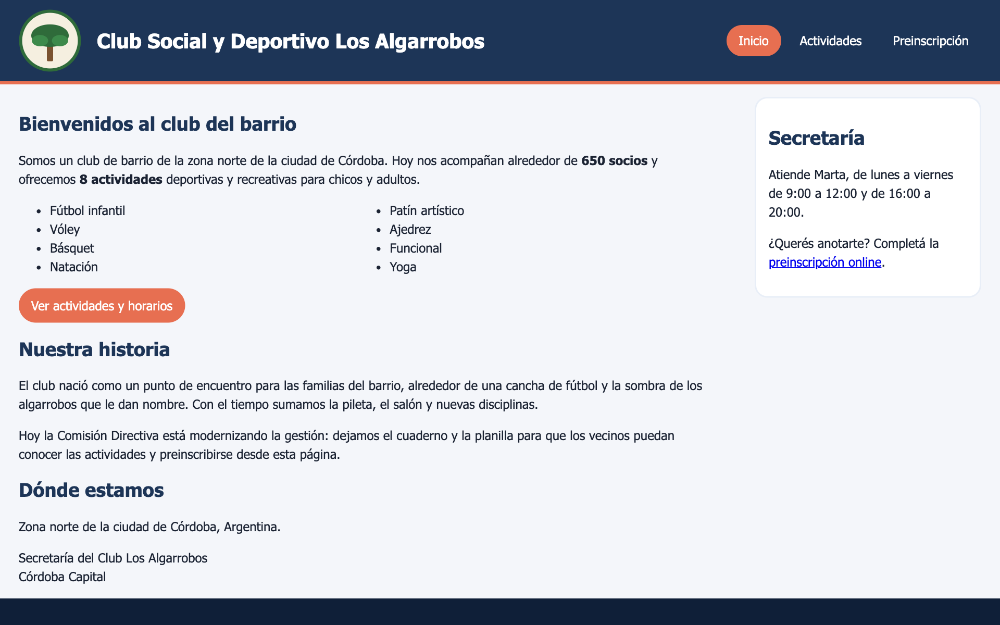
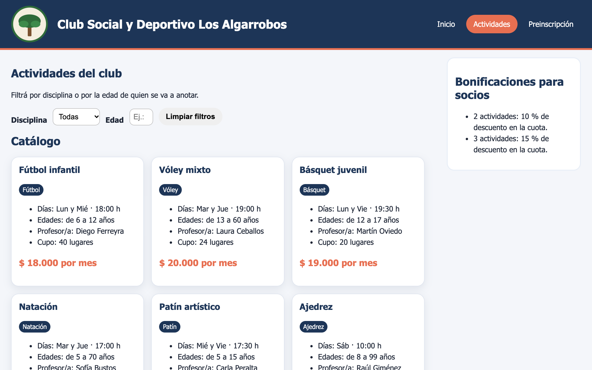
Actividad, con filtros.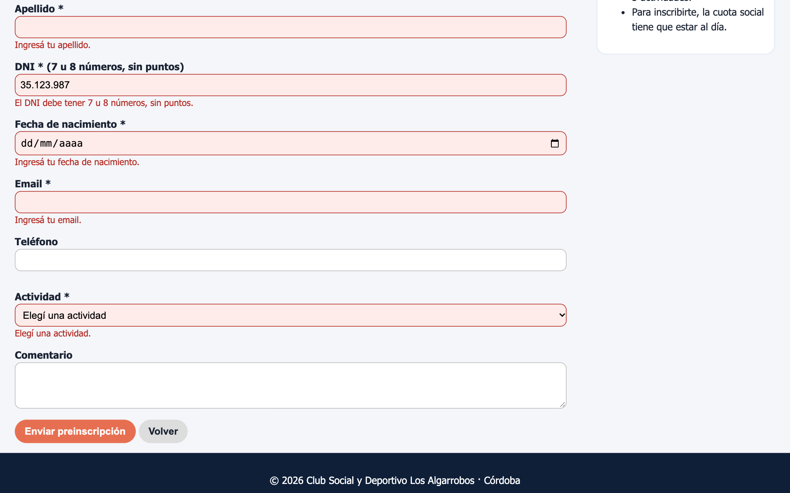
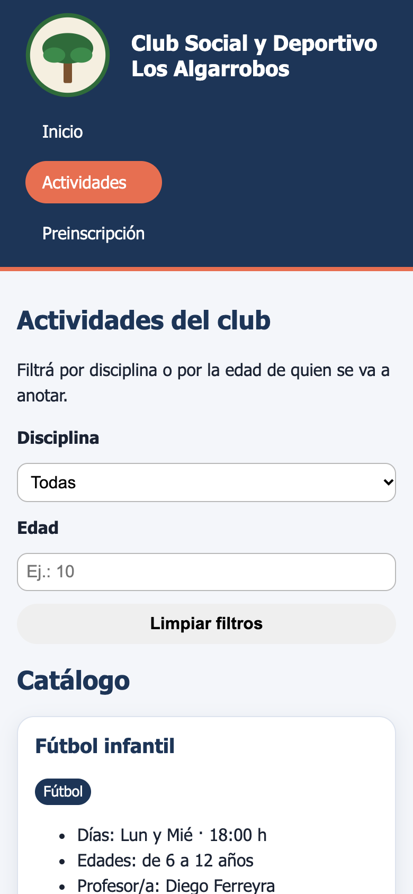
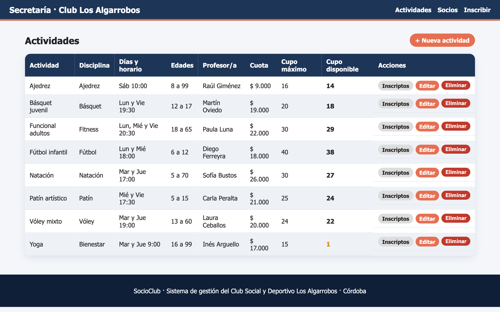
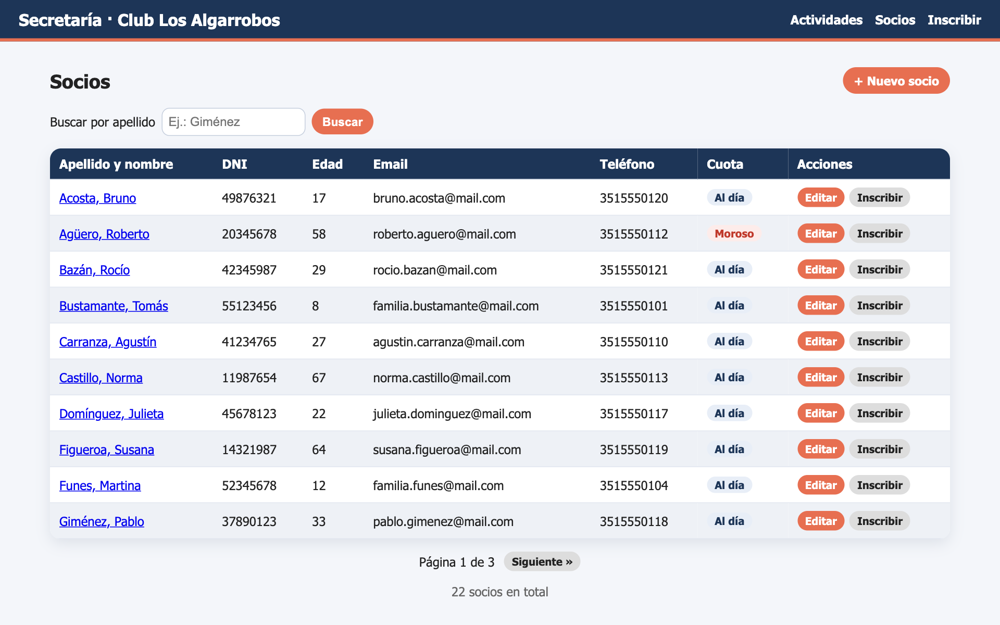
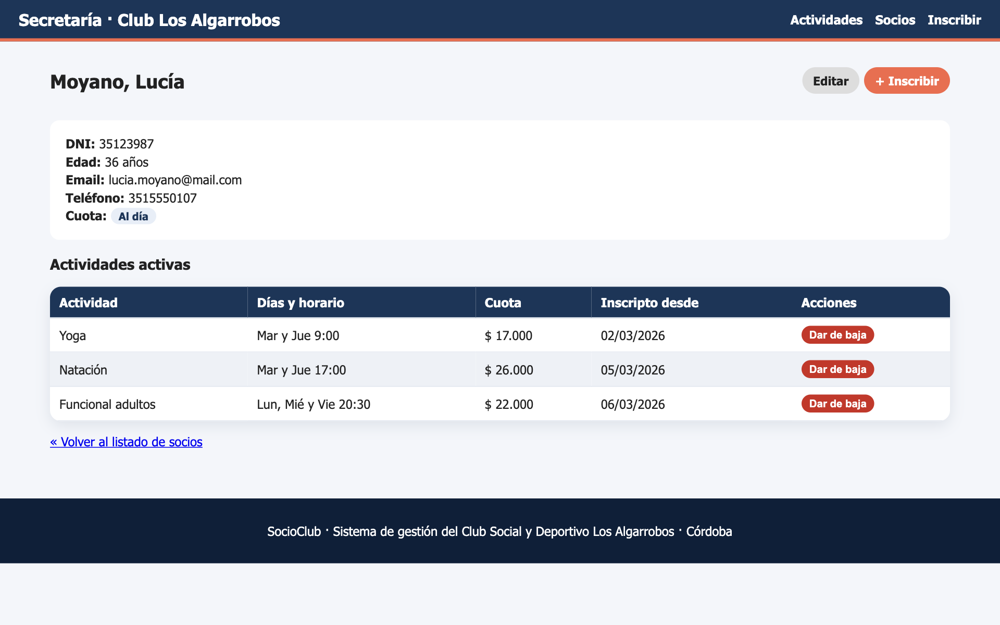
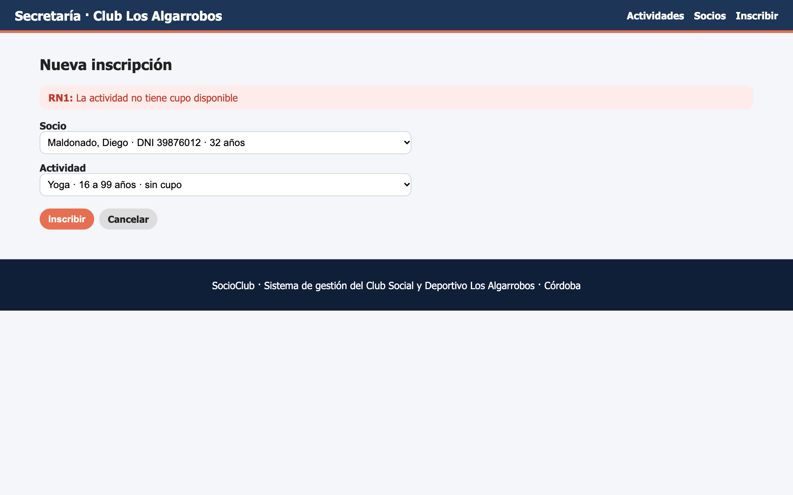
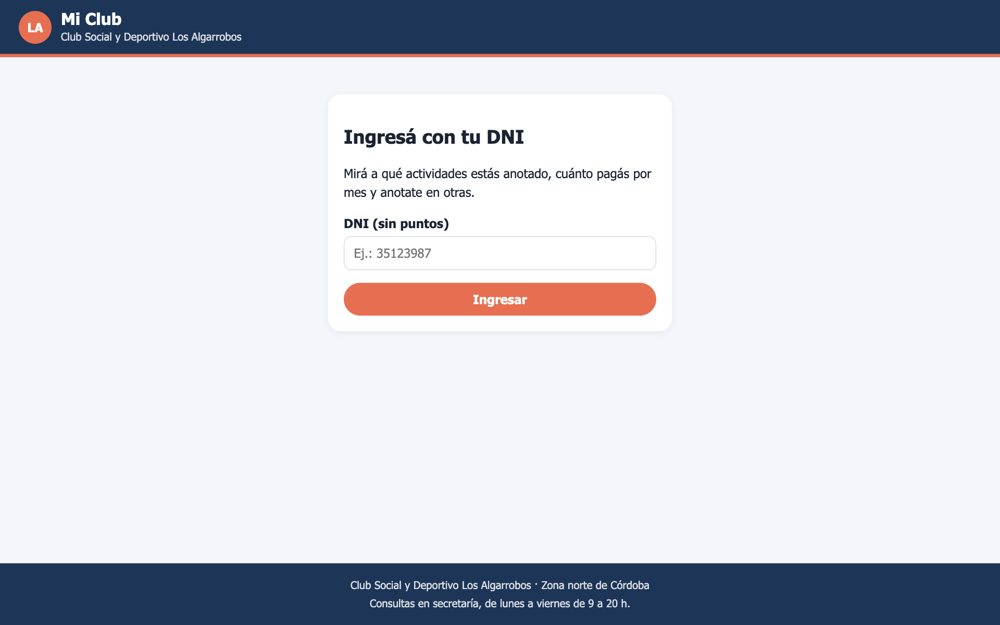
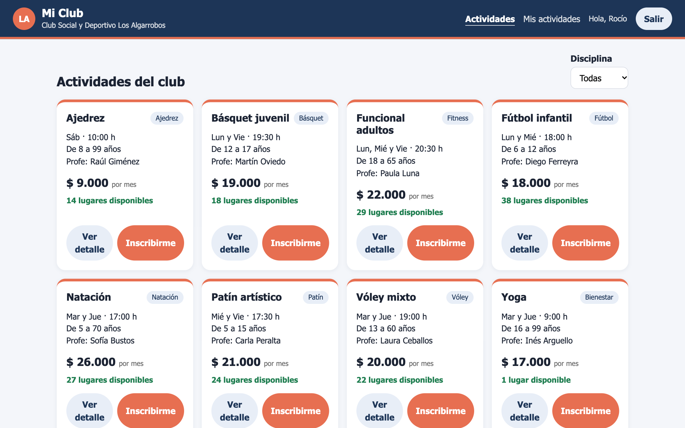
TarjetaActividad y filtro por disciplina.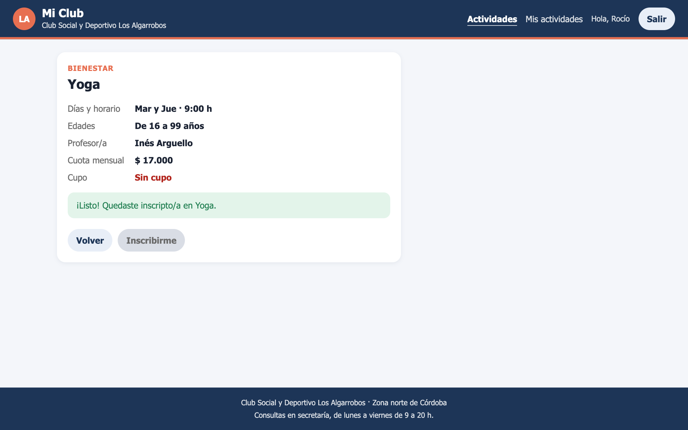
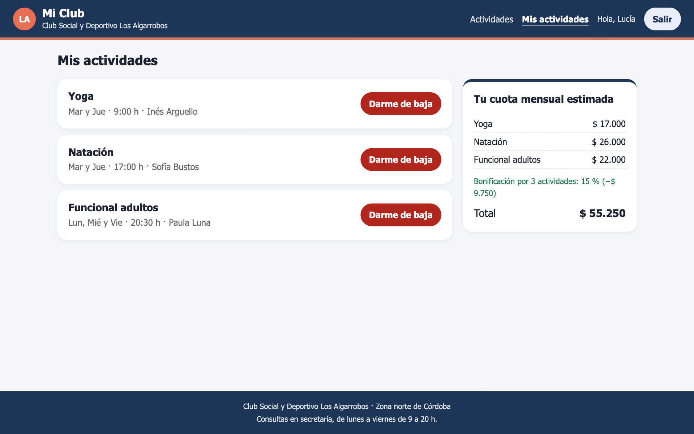
| Tipo | Herramienta | Alcance | Resultado |
|---|---|---|---|
| Unitarias | Jest | calcularCuotaMensual (6) y esDniValido (7) | 13 / 13 |
| De componente | Jest + React Testing Library | TarjetaActividad (5) y ResumenCuota (1) | 6 / 6 |
| De la API | Postman (corrida con newman) | 24 pedidos: todos los endpoints con casos exitosos y de error | 74 assertions, 0 fallas |
| De sistema | Manual, de punta a punta | 9 casos: inscripción, RN1 a RN5, baja, cupo liberado, RN7 | 9 / 9 |
Se corren con npm test en app-socios. Las unitarias prueban las dos funciones puras con casos límite: 0, 1, 2 y 3 actividades para el descuento, y DNI de 6, 7, 8 y 9 dígitos, con puntos, con letras y vacío. En las de componente se usan render, screen y fireEvent, y las funciones que recibe el componente se reemplazan por jest.fn(). Por ejemplo, se verifica que con cupo 0 la tarjeta muestre "Sin cupo", que el botón quede deshabilitado y que un clic no llame a onInscribirse.
La colección postman/SocioClub.postman_collection.json está organizada en tres carpetas (Actividades, Socios e Inscripciones). Cada pedido tiene tests que verifican el código de estado y, en los 409, la regla y el mensaje. Usa variables (baseUrl, actividadNuevaId, inscripcionId) para encadenar pedidos, por ejemplo crear una actividad y después modificarla y eliminarla. Al final da de baja la inscripción que creó, así se puede correr varias veces seguidas. La corrimos dos veces con newman: 48 pedidos, 74 assertions y 0 fallas.
Ejecutada el 22/11/2026 con la base recién cargada, en el orden de la tabla.
| N.º | Caso | Pasos | Resultado obtenido | Estado |
|---|---|---|---|---|
| CP1 | Inscripción exitosa | App: DNI 42345987 (Bazán) → Yoga → Inscribirme | "¡Listo! Quedaste inscripto/a en Yoga." Yoga pasa a "Sin cupo". En MySQL queda la inscripción ACTIVA. | Aprobado |
| CP2 | RN1: sin cupo | App: DNI 39876012 (Maldonado) → Yoga. Secretaría: inscribir a Maldonado en Yoga | App: botón deshabilitado. Secretaría: "RN1: La actividad no tiene cupo disponible". | Aprobado |
| CP3 | RN2: duplicada | App: DNI 35123987 (Moyano) → Natación → Inscribirme | "El socio ya está inscripto en esta actividad". | Aprobado |
| CP4 | RN3: edad | App: DNI 55123456 (8 años) → Vóley mixto | "La edad del socio (8 años) está fuera del rango permitido para Vóley mixto: de 13 a 60 años". | Aprobado |
| CP5 | RN4: moroso | App: DNI 20345678 (Agüero) → Fútbol infantil | "Debe regularizar su cuota en secretaría". "Mis actividades" muestra el aviso. | Aprobado |
| CP6 | RN5: máximo 3 | App: DNI 35123987 (3 activas) → Ajedrez | "Alcanzó el máximo de 3 actividades". | Aprobado |
| CP7 | Baja y cuota (RN6) | App: Moyano → Mis actividades → Yoga → Darme de baja | Total de $ 55.250 (15 %) a $ 43.200 (10 %). En MySQL la inscripción queda en BAJA, sin borrarse. | Aprobado |
| CP8 | La baja libera cupo | App: Maldonado → Yoga → Inscribirme | "1 de 15 lugares disponibles" y después inscripción aceptada. | Aprobado |
| CP9 | RN7: DNI inválido | App: ingresar "42.345.987" | "El DNI debe tener 7 u 8 números, sin puntos." No se llama a la API. | Aprobado |
El detalle completo, con el resultado esperado de cada caso, está en docs/pruebas.md.
Lo que más aprendimos fue a separar responsabilidades. Al principio era tentador validar el cupo en el controlador o deshabilitar el botón en React y darlo por resuelto. Al poner las reglas en el servicio, la API y la secretaría quedaron cumpliéndolas igual, y lo comprobamos mandando pedidos desde Postman que la interfaz no permite. Pasó lo mismo con api.js: como toda la comunicación con el backend está en un solo archivo, los componentes de React solo se ocupan de mostrar.
Ver el sistema completo le dio sentido a las piezas sueltas. En la materia vimos cada tecnología por separado. Seguir una inscripción desde el clic en React hasta el SELECT COUNT en MySQL nos ayudó a entender para qué sirve cada capa y dónde buscar cuando algo falla.
Algunos problemas solo aparecieron usando el sistema. El ciclo infinito de JSON, la sesión que se perdía al recargar la página y los datos de prueba que no permitían mostrar RN1 no los marcaba el compilador ni las pruebas unitarias. Los encontramos al usar el sistema como lo usaría alguien del club. Por eso la prueba de sistema nos pareció tan importante como las automáticas.
Las pruebas automáticas ahorran tiempo. La colección de Postman nos permitió revisar en segundos los nueve endpoints después de cada cambio en el backend. Las pruebas de Jest de calcularCuotaMensual nos dieron confianza para tocar la pantalla de la cuota sin miedo a romper el cálculo.
InscripcionService, para cubrir RN1 a RN5 sin depender de Postman.Usamos IA durante todo el trabajo, sobre todo para generar la primera versión de cada parte. La IA no reemplazó la revisión: en seis de las ocho entradas de la bitácora tuvimos que corregir o ajustar algo. Varias veces propuso herramientas o versiones distintas de las de la materia. Lo más útil fue pedirle que explicara su código y después explicárnoslo entre nosotros, porque eso es lo que nos va a permitir defender el trabajo.
Formato del Anexo C. Herramienta usada: Claude (asistente de programación de Anthropic). Le pasamos el enunciado completo y le pedimos que respetara las herramientas de la materia. Cada parte la revisamos corriendo el sistema antes de aceptarla.
| N.º | Parte | Qué le pedimos a la IA | Qué nos devolvió | Qué estaba mal / qué cambiamos y por qué |
|---|---|---|---|---|
| 1 | General | "Hacé los commits y subí la rama." | Commits con una línea final Co-Authored-By: Claude, que agrega a la IA como coautora. | Corrección del grupo. El enunciado evalúa los commits de cada integrante, así que le pedimos que firmara con el usuario y el mail de Git del integrante que hacía el trabajo, sin notas de la IA en commits ni en pull requests. Lo revisamos en cada commit con git log. |
| 2 | B | "Completá la parte B: ABM de socios con búsqueda y paginación, formulario de inscripción e inscriptos por actividad." | Controladores SocioController e InscripcionController, vistas Thymeleaf y manejo de ReglaNegocioException. | Ajuste del grupo. Al probar vimos que no se podía mostrar RN1: Yoga tenía 14 de 15 lugares, pero todos los adultos ya estaban inscriptos. Le pedimos agregar a data.sql dos socios adultos sin actividades (Bazán y Maldonado). |
| 3 | C | "Hacé la API REST del Anexo A reutilizando los servicios, con CORS y una colección de Postman con casos de error." | Tres @RestController, un @RestControllerAdvice (404, 409 y 400), CORS y la colección. | Revisamos que no apareciera el ciclo infinito de JSON del Anexo B; se resolvió con @JsonIgnore en las listas de inscripciones. Le pedimos además que la colección dejara la base como estaba, para poder correrla varias veces. |
| 4 | D | "Creá la app React con create-react-app." | Intentó npx create-react-app, que falló ("Could not start an npm process in the right directory"). | Error detectado. No cambiamos a Vite porque la materia pide create-react-app. Armamos el proyecto con los mismos paquetes (react-scripts 5.0.1 y cra-template), así que la estructura y los scripts son los de siempre. |
| 5 | D | "Usá PropTypes en los componentes que reciben props." | El proyecto se había creado con React 19. | Error detectado. En React 19 los propTypes de los componentes funcionales ya no validan nada. Volvimos a React 18.3.1, la versión con la que funciona lo que se vio en la materia. |
| 6 | D | "Cargá las actividades con useEffect y volvé a pedirlas después de inscribirse." | El pedido con Axios adentro del efecto, con dependencias [disciplina, recargas]. | No cambiamos el código, pero le pedimos que explicara por qué no definía la función afuera. Si está afuera, ESLint pide agregarla a las dependencias y, como se crea en cada render, el efecto se ejecutaría siempre. |
| 7 | D | "Guardá el socio que ingresó en un contexto para usarlo en todas las pantallas." | SocioContext con createContext, useContext y un SocioProvider. | Error detectado al probar. Al recargar la página (F5) el socio se perdía, porque el estado de React vive en memoria. Le pedimos guardarlo en sessionStorage; se borra al cerrar la pestaña o con "Salir". |
| 8 | E | "Hacé 6 pruebas unitarias sobre las funciones de utils y 2 de componente." | 13 pruebas unitarias y 6 de componente, todas aprobadas. | Ajuste. Cada prueba de componente mostraba un aviso de que ReactDOMTestUtils.act está deprecado. Subimos React Testing Library de la 13 a la 14.3.1. También le pedimos usar las cuotas reales del club en los montos esperados. |
Resumen: 8 entradas, 6 con un error o ajuste detectado por el grupo (1, 2, 4, 5, 7 y 8).